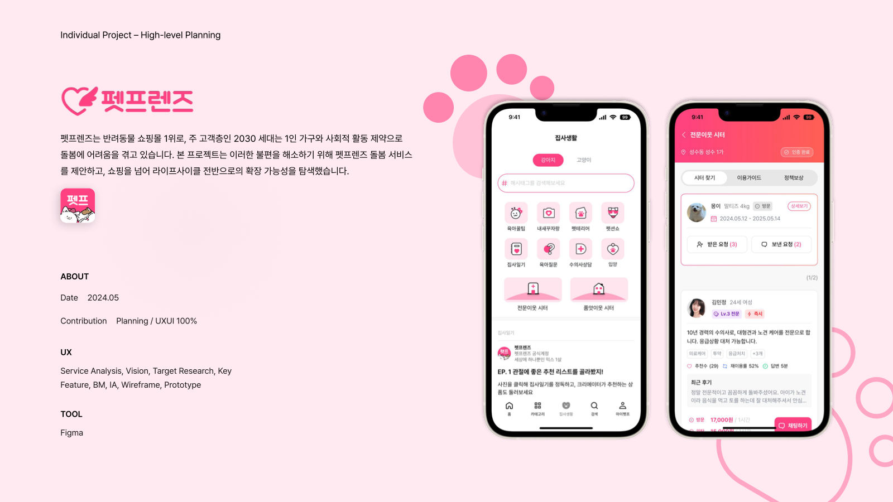

012025.09

Study

익숙한 기능을 다시 보고, 그 뒤의 선택을 짚어봤습니다.
취향을 맞춘 다음에는, 무엇을 연결할까?
개인화 추천 · 커뮤니티 · 카테고리 확장커뮤니티를 만들었는데, 왜 찾기 어려울까?
탐색 동선 · 정보 위계 · 콘텐츠 커머스배송 조건은 결제할 때 알면 너무 늦지 않을까?
배송지 우선 설정 · 장바구니 · 레시피빠른 배송 말고, 반려동물 전문몰을 고르는 이유는?
버티컬 UX · 맞춤 추천 · 재방문브랜드 이야기는 어떻게 구매할 이유가 될까?
브랜드 콘텐츠 · AARRR · 추천절차가 간단해져도, 동의까지 건너뛸 수는 없으니까.
복잡한 절차의 단순화 · 동의 안내 · 신뢰틈틈이 읽는 사람에게는, 돌아올 자리가 필요하다.
이어 읽기 · 멤버십 동선 · 콘텐츠 탐색모르는 단어 하나 때문에, 읽던 흐름을 끊어야 할까?
읽기 맥락 · AI 보조 · 검색·시리즈추천은 자동이어도, 내 취향의 결정권은 남아야 한다.
추천 재생목록 · 미디어 전환 · 사용자 제어내가 모은 장소가 다른 사람의 탐색을 도울 때.
저장 리스트 · 소유자·팔로워 권한빠른 견적 뒤에, 누구의 비용이 남을까?
양면 시장 · 자동 견적 · 캐시 정책국내 숙소와 해외 숙소, 같은 순서로 찾아도 될까?
예약 흐름 · 중복 입력 · 결합 상품줄은 원격으로 서는데, 화면은 몇 번을 넘어야 할까?
대기 신청 · 노쇼 방지 · 상태 안내예약을 받는 것과 실제 방문까지 이어지는 것은 다르다.
업종별 템플릿 · 리마인드 · 운영 지표알뜰하다는 이름만으로, 기다릴 이유가 될까?
배달 방식 · 가격·시간 교환 · 쿠폰 조건구경하던 집에서, 사고 싶은 물건을 발견하는 순간.
콘텐츠 커머스 · 유입·활성화캐릭터의 말투와 대화의 기억은 같은 문제일까?
멀티 에이전트 · Few-shot · RAG일치하는 기록이 없습니다. 다른 서비스나 주제로 찾아보세요.